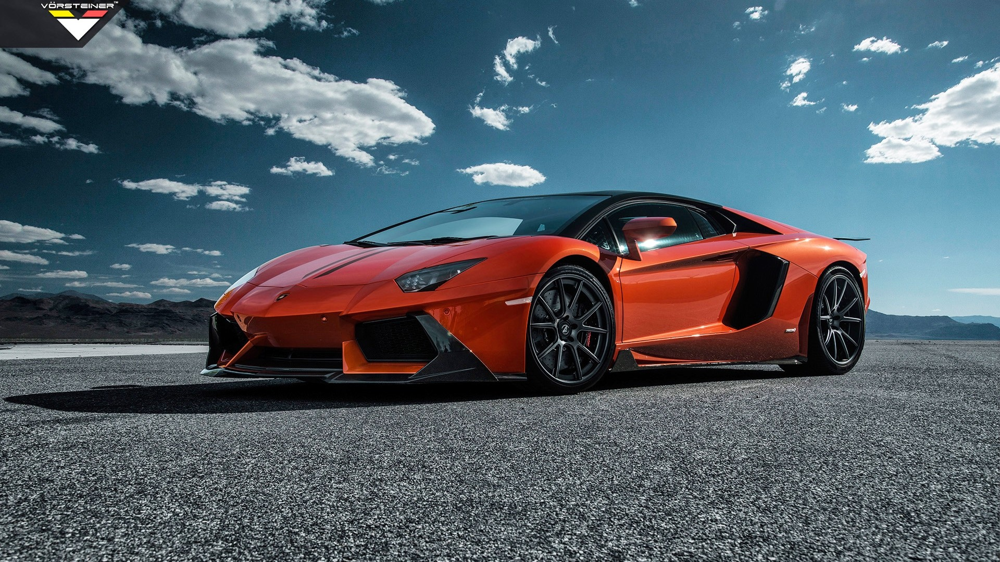
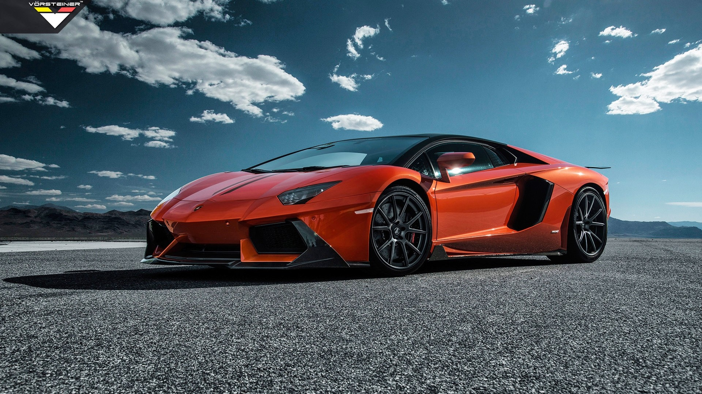
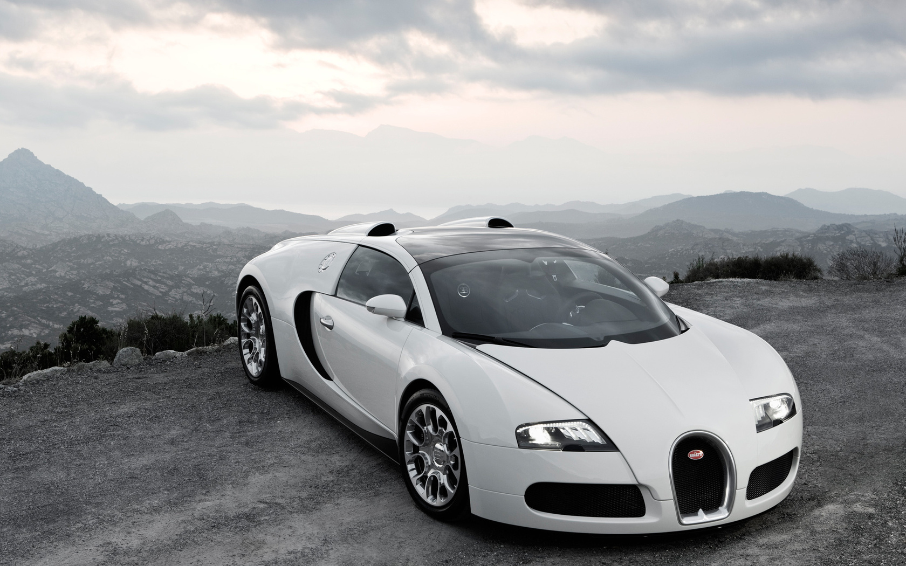

Бугатти против Ламборджини: битва гигантов среди спорткаров.
Мощные скоростные автомобили и суперкары – отличные темы для обсуждения, которые интересуют многих автолюбителей. Обычно, таким людям нравится говорить о быстрейших автомобилях с потрясающим внешним видом. И когда речь начинает идти о данной категории машин, такие бренды как Lamborghini и Bugatti всегда оказываются в центре внимания многих.
Оба бренда сумели сделать хорошую репутацию в автомобильном мире в изготовлении суперавтомобилей. Но сравнить Бугатти и Ламборджини на самом деле непросто, поскольку оба бренда обладают собственными особенностями, которые являются уникальными.
 
Автомобиль Veyron обладает удивительными характеристиками, которые в серийном исполнении несколько отличаются от возможностей авто, предоставленного co для установки мирового рекорда скорости. Впрочем, на вашем Вейроне будет стоять тот же двигатель и та самая уникальная коробка передач, что и на тестовой машине. Просто скорость искусственно ограничивается.
Технические характеристики Bugatti Veyron:
- 8 литров (7993 см³) W16, мощность двигателя по разным оценкам составляет от 1020—1040 л. с. (VW) до 1006—1026 л. с. (SAE) при 6000 об/мин, но во избежание недоразумений, Bugatti Automobiles S.A.S. объявило мощность двигателя равной 1001 л. с.
- Разгон, 0—100 км/ч = 2.5 с; 
- коробка уникальна по своей конструкции, трансмиссия представлена роботизированным механизмом DSG с 8 ступенями передач;
- максимальная скорость из соображений безопасности искусственно ограничена на пределе в 407 километров в час;
- расход топлива в обычном режиме поездки в смешанном цикле составляет 24.1 литр на сто километров;
- подвески жесткие, чтобы на скорость Veyron не терял управление и контроль дороги